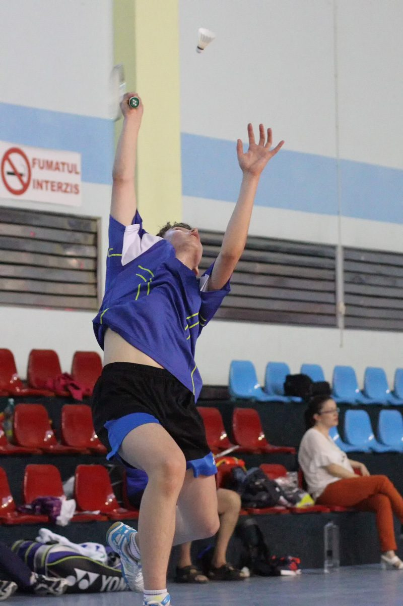

Toți sportivii
Nistor Cristian-Ionuț

- Categoria
- U17
- Proba
- Simplu băieți
- Grupa
- de confirmat
Locul 2 în țară la U17, simplu băieți, cu 168 de puncte
Clasamentul FRB, săptămâna 46, 9–15 noiembrie 2026
Apare în articolele clubului

Turneele care contează
Apar aici după prima sincronizare cu clasamentul FRB. Până atunci le găsești pe Profilul FRB.
Medalii
Încă nu are medalii trecute în articolele clubului.
Schiță: când există, aici apare câte un rând pe sezon, cu un semn pentru fiecare medalie și proba.